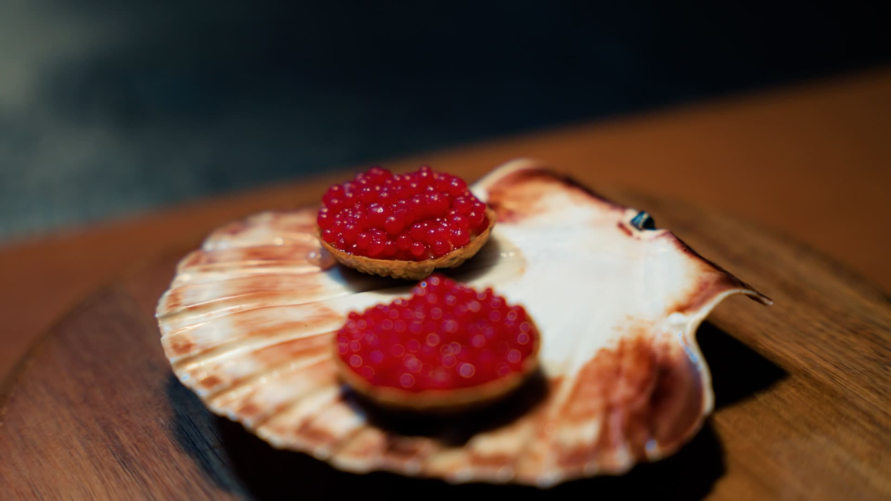
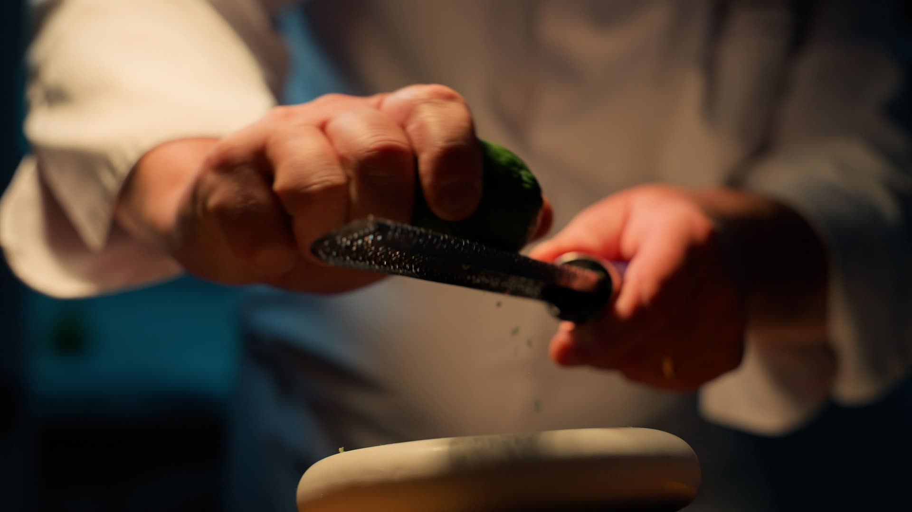
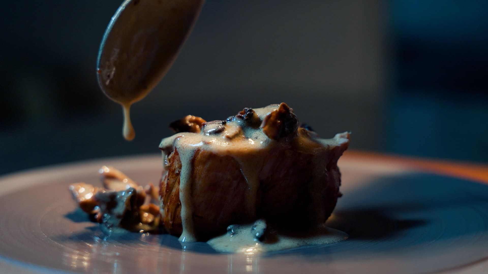
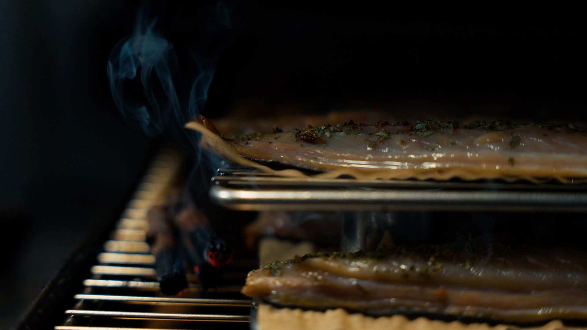
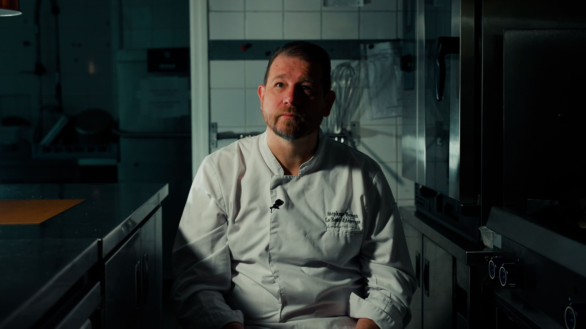
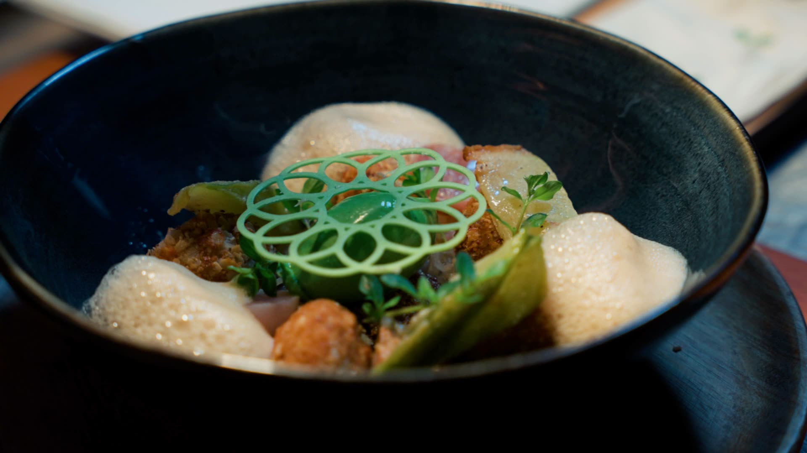
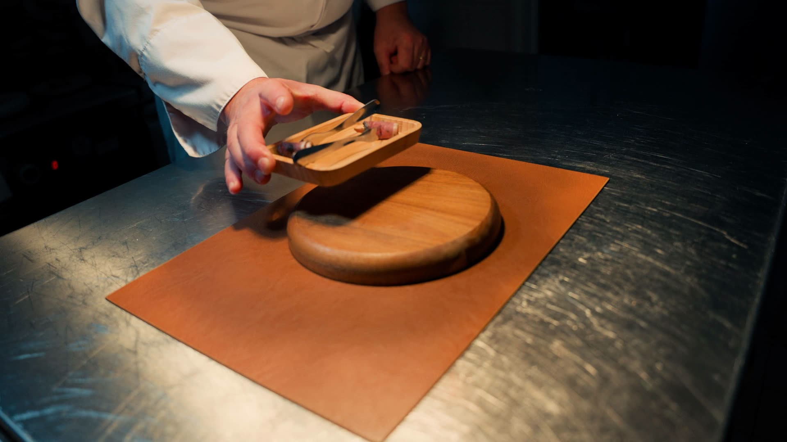
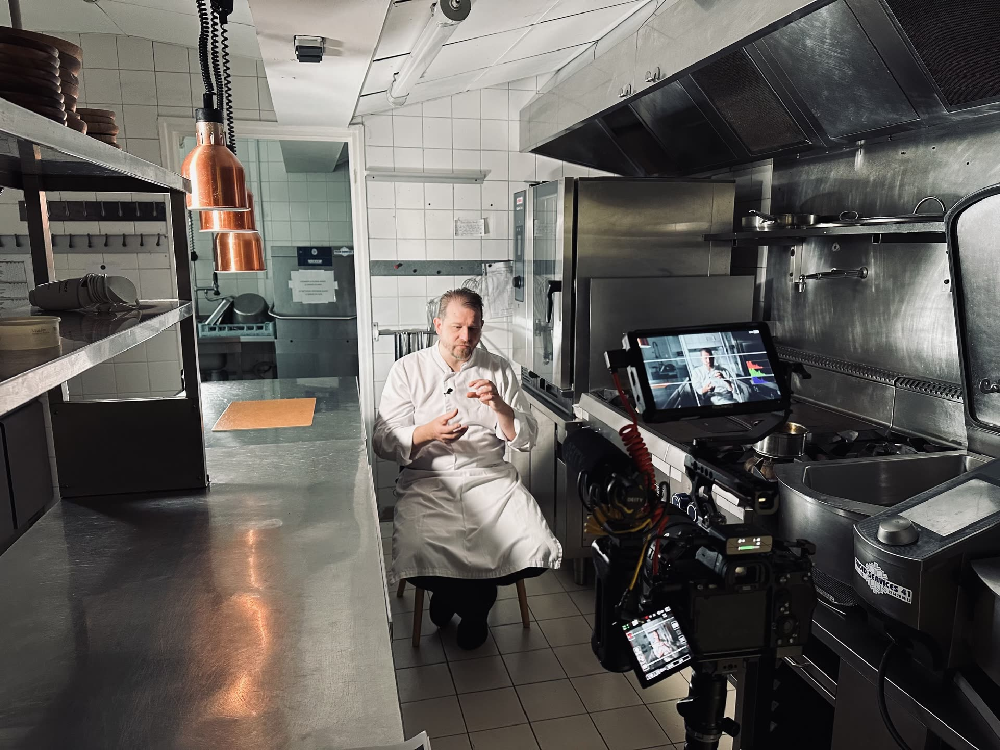
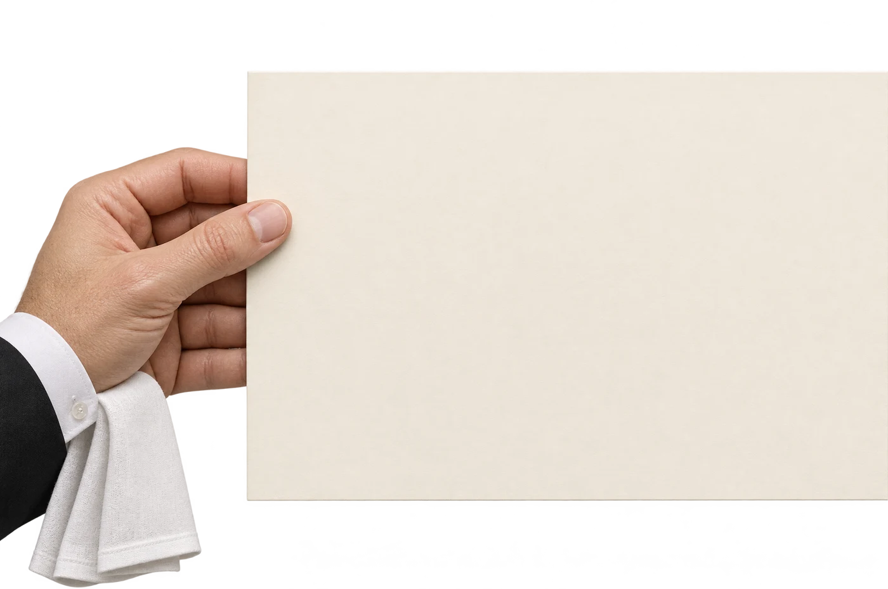

Culinaire · Signature chef
Films culinaires pour chefs et restaurants gastronomiques
Le geste, la matière, la lumière. En Vallée de la Loire et partout en France.
Le concept
Vous ne présentez pas votre restaurant. Vous faites vivre une expérience.
Chaque image traduit votre identité, chaque plan met en valeur votre savoir-faire. Le client découvre votre univers à travers votre histoire, votre parcours et votre vision de la cuisine. Votre restaurant marque les esprits avant même la réservation.




Structure du film
Soixante secondes, quatre envois
-
Envoi 1/4 · 0:00 → 0:05
Le hook
Un enchaînement rapide de plans courts : cuisson, dressage, feu, gestes précis. Un rythme soutenu dès l’ouverture pour capter le regard.
-
Envoi 2/4
L’interview
La parole au chef, face caméra, dans un cadre et une lumière travaillés. Questions guidées, alternance face caméra et voix off.

-
Envoi 3/4
Le plat signature
Plans serrés sur les textures et le dressage, mouvements lents et précis, le détail des finitions.

-
Envoi 4/4 · → 1:00
Le rythme
Un montage qui alterne plans courts et plans posés, des transitions fluides, un sound design calé sur l’image jusqu’à la dernière seconde.


L’interview
Le chef au centre
- Vous devenez le visage de votre restaurant.
- Vous partagez votre vision, sans artifice.
- Vous n’avez rien à préparer, je vous guide pendant toute la prise.
- Vous parlez simplement de votre métier et de ce qui vous anime.
Le tarif
L’addition, affichée
Un prix fixe, sans supplément caché. Tout ce qu’il faut pour un film prêt à diffuser.
Qualimatic Production
Signature chef
- Film cinématographique de 60 secondes
- Tournage sur site : cuisine, salle, interview
- Interview du chef, dirigée
- Mise en scène du plat signature
- Montage, étalonnage et sound design
Total1 200 € TTC
L’ardoise du jour
Pour les chefs de la Loire et d’ailleurs
Tables étoilées, Bib Gourmand, maisons de gastronomie et hôtels-restaurants : des chefs attachés à leur terroir et à leurs producteurs. Je commence près de chez moi, en Sologne, en Touraine et dans le Blésois, et je me déplace partout en France.
- Vallée de la Loire
- Sologne
- Touraine
- Blois
- Tours
- Orléans
- Île-de-France
- Provence
- Côte d’Azur
- Bordeaux
- Bourgogne
Questions
Avant le service
01Combien coûte un film culinaire Signature Chef ?
1 200 € TTC, prix fixe : un film de 60 secondes, le tournage sur place (cuisine, salle, interview), l’interview du chef, la mise en scène du plat signature, le montage, l’étalonnage et le sound design.
02Faut-il préparer l’interview ?
Non. Je vous guide pendant toute la prise. Vous parlez simplement de votre métier et de ce qui vous anime.
03Où sera diffusé le film ?
Vous recevez une vidéo prête à être diffusée, pensée pour votre site et vos réseaux.
04Où vous déplacez-vous ?
En Vallée de la Loire d’abord, en Sologne et en Touraine, et partout en France sur demande : Île-de-France, Provence, Côte d’Azur, Bordeaux, Bourgogne.

Réservation
Réserver un appel
Vingt minutes pour parler de votre cuisine, sans engagement ni devis automatique. Dites-moi comment vous joindre.
Ou directement 07 71 06 32 18 qualimatic.production@gmail.com